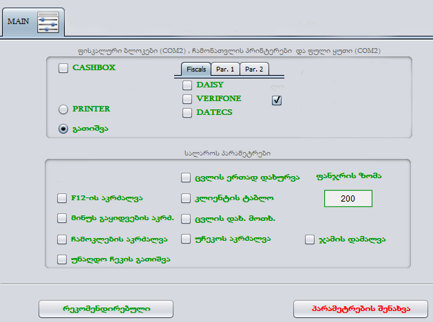
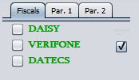
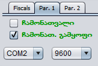
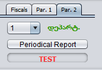
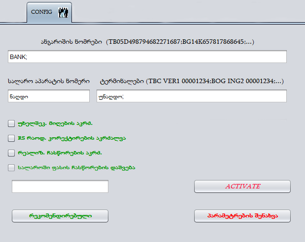
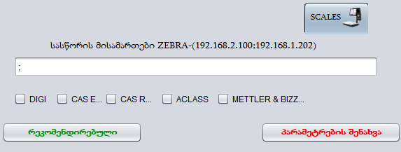
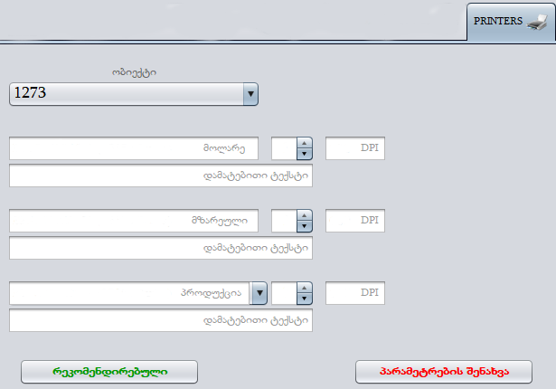
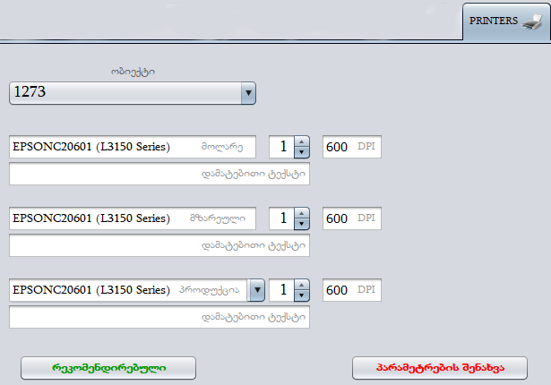

<article>
  <section>
    <h1>პარამეტრები</h1>

    <p>
      პარამეტრების ფანჯრიდან შეგვიძლია დავაწესოთ შეზღუდვები. უნდა
      გავითვალისწინოთ, რომ ეს შეზღუდვები იმოქმედებს მხოლოდ იმ კომპიუტერზე
      რომელზეც ჩავრთავთ, შესაბამისად თუ გვინდა მოლარემ გატარებული პროდუქცია ვერ
      წაშალოს წაშლის კოდის გარეშე ამ შემთხვევაში ეს ფუნქცია უნდა გავააქტიუროთ
      მოლარის და არა მენეჯერის კომპიუტერზე.
    </p>
    <p>
      პარამეტრების ფანჯარაში გვხვდება რამდენიმე დანაყოფი. რომელსაც ვნახავთ
      სათითაოდ.
    </p>
    <p>MAIN - ძირითადი პარამეტრები საიდანაც</p>
    

    <ul>
      <li>
        <strong>CASHBOX </strong>- შეგვიძლია ჩავრთოთ ფუნქცია რომელის მეშვეობითაც
        ნაღდზე რეალიზაციის შემდეგ ავტომატურად გაიღება ფულის ყუთი(აუცილებელია რომ
        ფულის ყუთი შეერთებული იყოს POS-ზე (COM1)და რა თქმა უნდა ფულის ყუთს უნდა
        ქონდეს ავტომატური გაღების ფუნქცია)
      </li>
      <li>
        <strong>PRINTER</strong> - ჩამონათვალის პრინტერის პროგრამასთან
        დაკავშირების შემდეგ მისი გააქტიურება.
      </li>
      <li>
        <strong>გათიშვა</strong> - მონიშნულია როდესაც ჩამონათვალის პრინტერს არ
        ვიყენებთ.
      </li>
      <li>
        <strong>F12-ის აკრძალვა </strong>- მოლოდინის რეჟიმში გადატანის აკრძალვა.
      </li>
      <li>
        <strong>მინუს გაყიდვების აკრძალვა </strong>- არ გაატარებს ისეთ
        პროდუქციას რომელიც არ გვექნება ნაშთზე პროგრამულად.
      </li>
      <li>
        <strong>ჩამოკლების აკრძალვა </strong>- მოლარე ვერ შეძლებს გატარებული
        პროდუქციის ამოშლას.
      </li>
      <li>
        <strong>უნაღდო ჩეკის გათიშვა </strong>- ბარათით გადახდის დროს სალარო
        აპარატიდან ჩეკი არ ამოვა.
      </li>
      <li><strong>ცვლის ერთად დახურვა - </strong></li>
      <li>
        <strong>კლიენტის ტაბლო </strong>- დამატებითი ეკრანის შემთხვევაში, მეორე
        ეკრანზე მომხმარებელი დაინახავს რა პროდუქციასაც ატარებს მოლარე
        რეალიზაციის ფანჯარაში, ასევე ფასი და რაოდენობაც.
      </li>
      <li><strong> ცვლის დახ. მოთხ.</strong>-</li>
      <li>
        <strong>უჩეკოს აკრძალვა</strong> - პროგრამა არ გადაუშვებს რეალიზაციაში
        როდესაც სალარო აპარატი არ იმუშავებს ანუ სანამ ჩეკი არ ამოვა სალარო
        აპარატიდან, მაშინაც კი თუ სალარო აპარატთან კავშირს გამოვრთავთ.
      </li>
      <li>
        <strong>ჯამის დამალვა</strong>- ვიყენებთ შერეული გადახდის დამატების
        დროს. მალავს გაყიდული პროდუქციის ჯამურ თანხას.
      </li>
    </ul>
    <div class="d-flex align-items-center mt-3">
      <div>
        
      </div>
      <div>
        <p>
          სალარო აპარატის დასაკავშირებლად ამ გრაფაში უნდა მოვნიშნოთ სალარო
          აპარატის მოდელი. და გადავიდეთ par.1 ში
        </p>
      </div>
    </div>
    <div class="d-flex align-items-center mt-3">
      <div>
        
      </div>
      <div>
        <p>
          Par. 1 -ში უნდა ავირჩიოთ გვინდა თუ არა, რომ სალარო აპარატიდან ამოვიდეს
          პროდუქციის ჩამონათვალი. ჩამონათვალის გამყოფი საჭიროა, რომ ჩამონათვალი
          ამოვიდეს უფრო გარკვევით და მეტი გამოტოვებით, რაც უფრო მეტ ქაღალდს
          მოითხოვს. უნდა ავირჩიოთ COM - რომელ კომზე არის სალარო აპარატი
          კომპიუტერში და ასევე ბაუნდრეითი, რომელიც მხოლოდ დატექსზე გვხვდება
          115200 დანარჩენ სტანდარტულს სალარო აპარატებზე 9600 დავტოვოთ.
        </p>
      </div>
    </div>
    <div class="d-flex align-items-center mt-3">
      <div>
        
      </div>
      <div>
        <p>
          Par. 2 დან შეგვიძლია ამოვიღოთ დეტალური ჩეკები. დავაჭიროთ Periodical
          Report ავირჩიოთ თარიღი რომელი პერიოდის დეტალური რეპორტი გვჭირდება, რის
          შემდეგაც სალარო აპარატის დაიწყებს ჩეკის ამოღებას, სადაც სათითაოდ
          იქნება ამობეჭდილი ყველა , მითითებულ პერიოდში, გატარებული ჩეკები. ეს
          გვჭირდება როდესაც პროგრამა და ზეტ რეპორტი არ ედრება ერთმანეთს,
          პროგრამაში ყველა გატარება სათითაოდ არის ნაჩვენები, დეტალურის ამოღების
          შემდეგ შეგვიძლია შევადაროთ ზეტი პროგრამას და ვნახოთ რომელ ჩეკში გვაქვს
          სხვაობა.
        </p>
      </div>
    </div>

    <p>CONFIG - გაფართოებული პარამეტრები.ტერმინალის ინტეგრაცია.</p>
    
    <p>
      პროგრამაში, მომწოდებლების ფანჯარაში, გადახდის დაფიქსირების დროს, როდესაც
      გადახდის მეთოდს ვირჩევთ, შეგვიძლია დავამატოთ ჩვენი ანგარიშის ნომრები
      იმისთვის, რომ დავაზუსტოთ რომელი ანგარიშიდან მოხდა გადახდა. სურათში
      პირველივე ზოლში უნდა ჩავწეროთ ანგარიშის ნომერი და დაემატება გადახდის
      ფანჯარაში, თუ რამდენიმე ბანკის ანგარიშის ნომრის ჩაწერა გვინდა ანგარიშების
      ერთმანეთისგან უნდა გამოვყოთ წერტილ მძიმის მეშვეობით.
    </p>
    <p>
      სალარო აპარატის ნომერი - შეგვიძლია ჩავწეროთ ჩვენი სალარო აპარატის ნომერი.
    </p>
    <p>
      ტერმინალები - უნდა ჩავწეროთ ტერმინალის ინფორმაცია შემდეგი თანმიმდევრობით:
      ბანკი - ტერმინალის მოდელი - კომის ნომერი - ტერმინალის პოს აიდი. TBC
      VER9SH000001.
    </p>
    <p>
      უხელშეკ. მიღების აკრძ. - მიღების დროს თუ ყველა პროდუქცია არ იჯდა არჩეულ
      ხელშეკრულებაში არ მიგვაღებინებს ზედნადებს, ასევე ხელშეკრულების გარეშე ვერ
      მივიღებთ ზედნადებს.
    </p>
    <p>
      RS რაოდ. კორექტირების აკრძალვა - პროგრამაში RS ფანჯარაში შესაძლებელი
      მომწოდებლის მიერ ატვირთული რაოდენობის კორექტირება, თუ ამ ფუნქციას ჩავრთავთ
      აღარ შეგვეძლება რაოდენობის ჩასწორება ზედნადებში.
    </p>
    <p>
      რეალიზ. ჩასწორების აკრძალვა - აღარ შეგვეძლება უკვე რეალიზებული პროდუქციის
      ამოშლა პროგრამიდან.
    </p>
    <p>
      სალაროში ფასის ჩასწორების დაშვება- სალაროში მოლარეს არ შეუძლია
      სარეალიზაციო ფასის ჩასწორება თუ ამ ფუნქციას ჩავრთავთ შეეძლება ჩასწორება.
    </p>
    <p>
      ამ ფანჯარაში შესვლა არ არის შესაძლებელი ყველა მომხმარებლისთვის და ჭირდება
      სპეციალური პაროლი, რომელიც უნდა შევიყვანოთ ცარიელ ფანჯარაში და დავაჭიროთ
      ACTIVATE - ღილაკს.
    </p>
    <p>SCALES - სასწორთან დაკავშირება.</p>
    
    <p>
      პროგრამის სასწორთან დასაკავშირებლად საჭიროა ვიცოდეთ სასწორის მოდელი და
      მოვნიშნოთ შესაბამისი უჯრა, მხოლოდ SHTRIX-M -ის შემთხვევაში უნდა გავწეროთ
      სასწორის IPV4- მისამართი ცარიელ გრაფაში, თუ რამდენიმე სასწორი გვაქვს ამ
      შემთხვევაში გამოვყოფთ წერტილ მძიმით.
    </p>
    <p>PRINTERS - სტანდარტული ან ჩამონათვალის პრინტერის დამატება,</p>
    
    <p>
      პრინტერის დასამატებლად უნდა ჩამოვშალოთ „პროდუქცია“ (მეხუთე გრაფა),
      გამოჩნდება ჩამონათვალი და უნდა ავირჩიოთ პრინტერი რომლის დაკავშირებაც
      გვინდა. შემდეგ უნდა დავაკოპიროთ ამ პრინტერის დასახელება და ჩავაკოპიროთ
      როგორც „მზარეულის“ ასევე „მოლარე“ ს უჯრებში. DPI იში სტანდარტული პრინტერის
      შემთხვევაში უნდა ჩავწეროთ 600 ხოლო ჩამონათვალის პრინტერის შემთხვევაში 201
      (სამივე შუ პატარა ფანჯრაში უნდა ჩავწეროთ 1.)
    </p>
    <p>საბოლოოდ გამოიყურება ასე :</p>
    
    <p>
      ნებისმიერი პარამეტრის შეცვლის შემდეგ უნდა დავაჭიროთ პარამეტრების შენახვას
      და გამოვიდეთ პროგრამიდან. პროგრამიდან გამოსვლა აუცილებელია!!!
    </p>
  </section>
</article>
